APC 技術ブログ
https://techblog.ap-com.co.jp/
株式会社エーピーコミュニケーションズの技術ブログです。
フィード
【Backstage】 kubernetes pluginのセキュリティが強化されました
APC 技術ブログ
はじめに 皆さんこんにちは。エーピーコミュニケーションズ ACS事業部 亀崎です。 本ブログでも何度も取り上げてきている Backstage には Kubernetes用のPluginも存在します。 techblog.ap-com.co.jp techblog.ap-com.co.jp 今回はそのPluginでセキュリティが強化された話です。 Kubernetes plugin クラスター情報の指定 BackstageのKubernetes pluginでクラスタ情報を登録する方法（設定）を clusterLocatorMethodsといいます。代表的な指定方法には以下のようなものがあります。…
1日前
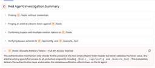
【Wiz】Scan for Goodとは？無料トライアルとの違いと日本向け支援内容を解説
APC 技術ブログ
Wizの日本向け無償プログラム「Scan for Good」とは？公開サイトやAPIの重大なリスクをAIと専門家が調査する支援内容や、通常の無料トライアルとの違い、対象企業・申込条件をわかりやすく解説します。
1日前
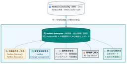
【NetBox連載 第2弾】NetBox Enterpriseとは？自社環境で使える有償版を解説
APC 技術ブログ
本シリーズについて: NetBoxを検討する方向けの連載の第2弾です。第1弾「NetBoxとは？ネットワーク管理の「Source of Truth」を解説」ではNetBoxの全体像を紹介しました。本記事では有償版「NetBox Enterprise」を掘り下げます。今後、SaaS版「NetBox Cloud」、自動収集機能（Discovery / Assurance）の解説を順次公開予定です。 1. NetBox Enterpriseの位置づけ 2. Community版との違い 3. Enterprise版を選ぶ8つの理由 理由1: 台帳を「作る」「守る」を自動化できる（Discovery …
2日前
【Zscaler】OneAPI入門#1 自動化の第一歩、アクセストークンを取得しよう
APC 技術ブログ
ZscalerのAPIを使ってみたいけれど、何から始めればいいか分からない方へ。OneAPIの基本となるアクセストークンの取得方法を、PythonとPostmanで解説します。
4日前
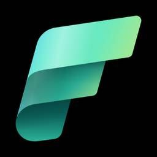
実践で使えるFabric Analytics Engineer Associate（DP-600）合格体験記
APC 技術ブログ
データエンジニアリング初心者がMicrosoft Fabric認定資格「DP-600」に合格した学習プロセスを解説。試用版を用いた実践ハンズオンを中心に、おすすめ書籍やMS Learnの活用法、試験本番の勘所まで客観的に共有します。
4日前

Datadog private action runnerにAKSアラートの一次対応をしてもらう
APC 技術ブログ
こんにちは、クラウド事業部の山中です。 日々アラート対応をしていると、とりあえずクラスタにkubectlを実行して今のpodの状態を確認したくなります。 今回はDatadog Operatorを使ってAKSにprivate action runnerをデプロイし、 アラート発生時にpodの情報を自動的に取得してもらおうと思います。 private action runnerのセットアップ Azure側の準備 まずはAzure側のリソースを作成します。 検証用に以下のterraformコードを書きました。 terraformコード # provider terraform { required_…
5日前

Foundryの Copilot harness を試してみた ― Application Insights で見えた仕組みと、A2A での挙動の違い
APC 技術ブログ
目次 目次 はじめに FoundryのCopilot harnessとは 何のためのものか GitHub Copilotとの関係 主な機能 提供状況と制約 作り方 Application Insightsで見えた仕組み 1回の実行は、入れ子のスパンで記録される サブエージェントが動くこともある Foundry側の記録は、別名になる レート制限のとき そのほか見えたもの A2Aでの比較 比較の条件 成功時は、ほぼ同じ形で返る エラー時は、返り方が変わる A2Aの仕様では、どう決まっているのか ハーネスが error を返さない理由 監視で気をつけたいこと 結びに ACS 事業部のご紹介 はじめに…
6日前

【OCI】Oracle Cloud Infrastructure Certified Architect Associate合格記
APC 技術ブログ
はじめに こんにちは、クラウド事業部の藤江です。 今回は、Oracle Cloud Infrastructure（OCI）の認定資格である「Oracle Cloud Infrastructure Certified Architect Associate」に合格したので、学習方法や受験した感想について紹介します。 今回の受験は、以前取得した資格の更新が目的です。 受験した試験 今回受験した試験は以下のとおりです。 項目 内容 試験名 Oracle Cloud Infrastructure Certified Architect Associate 試験番号 1Z0-1072-26-JPN 試験…
6日前
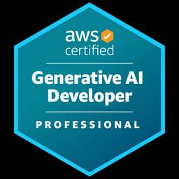
【AWS】AWS Certified Generative AI Developer - Professional (AIP-C01) に合格したので所感を綴る
APC 技術ブログ
目次 目次 はじめに 関連記事 試験について 点数 勉強期間 教材 試験の感想 お知らせ はじめに こんにちは、クラウド事業部の坂口です。 先日、AWS Certified Generative AI Developer - Professional (AIP-C01) を受験して、ありがたいことに無事合格をいたしました。 いつもの通り、万全とは限りなく程遠い状態で臨むこととなりましたが、合格したので結果オーライ。受けてみた感想などをつらつらと書いていこうと思います。 関連記事 ※ほぼ同じタイミングで再認定のために受験したDOPの記事 ※本記事ではこちらの記事の内容がそこそこ出てきます tec…
7日前
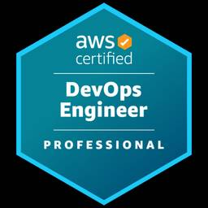
【AWS】AWS Certified DevOps Engineer - Professional (DOP-C02) を再認定 (更新) したので所感を綴る
APC 技術ブログ
目次 目次 はじめに 関連記事 試験について 点数 勉強期間 教材 試験の感想 お知らせ はじめに こんにちは、クラウド事業部の坂口です。 先日、AWS Certified DevOps Engineer - Professional (DOP-C02) を再認定のために受験し、無事合格してきました。 いつの間にか有効期限の3年が迫っており、失効した場合の影響が大きすぎるため重い頭と腰を上げました。 ついでに、社内的な都合ではありますが、10月中に受験しておきたかったという都合もあります。 今回は再認定のための受験ということもあり、受けてみた感想などをそれとなく書いていこうと思います。 関連記…
7日前
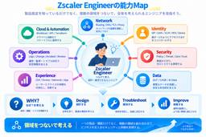
Chapter 8｜第90回 これからのZscalerエンジニアに求められるものは何か？
APC 技術ブログ
こんにちは、エーピーコミュニケーションズ 0-WANの山根です。 90回の連載をここまで読み進めると、Zscalerには多くの製品名や機能があることが分かります。 では、Zscalerエンジニアに必要なのは、それらの設定項目をすべて暗記することでしょうか。 もちろん製品知識は必要です。 しかし、実務では「この画面で何を設定するか」より先に、 なぜこの通信になるのか。なぜこの制御が必要なのか。どこに原因候補があるのか。 を考える場面が数多くあります。 最終回では、90本で学んだ内容を「これから伸ばしていく力」として整理します。 まず結論。「製品を知る力」より一段上に「アーキテクチャを考える力」が…
7日前
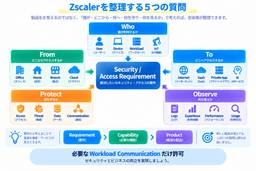
Chapter 8｜第89回 Zscalerの製品が増えても迷わないための整理方法
APC 技術ブログ
こんにちは、エーピーコミュニケーションズ 0-WANの山根です。 Zscalerを学び始めたときは、ZIAとZPAを覚えれば全体像が見えやすかったかもしれません。 ところが現在は、ZDX、Zero Trust Branch、Zero Trust Browser、Zero Trust Cloud、データセキュリティ、AIセキュリティなど、扱う領域が広がっています。 製品名を一つずつ暗記しようとすると、 「これはZIAなのか、別製品なのか」 「この機能は誰を守るのか」 「新しい名前が出るたびに全体像が分からなくなる」 という状態になりやすくなります。 そこで最終回の一つ前では、製品名ではなく目的と…
7日前
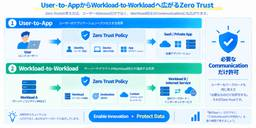
Chapter 8｜第88回 Zscalerで「ユーザー」以外を守る世界とは？
APC 技術ブログ
こんにちは、エーピーコミュニケーションズ 0-WANの山根です。 ここまでの連載では、多くの場面で「ユーザーがアプリケーションへアクセスする」流れを中心に見てきました。 しかし企業の通信は、人が操作するPCからだけ発生するわけではありません。 クラウド上のWebサーバーが外部APIへ接続する。 アプリケーションサーバー同士が通信する。 AWSとAzureのワークロードがデータをやり取りする。 データセンターのシステムがクラウドサービスへ接続する。 こうしたサーバーやワークロード同士の通信にもゼロトラストを広げられます。 まず結論。ゼロトラストの対象は「人」だけではない 一言でいうと、 Zsca…
7日前
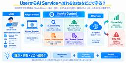
Chapter 8｜第87回 AI時代に情報漏えい対策はどう変わる？
APC 技術ブログ
こんにちは、エーピーコミュニケーションズ 0-WANの山根です。 生成AIを業務で使う場面が一気に増えました。 文章の要約、議事録作成、コード生成、調査、資料作成。 便利な一方で、利用者がプロンプトへ入力した情報は、従来のファイルアップロードとは違う形で外部サービスへ送られることがあります。 たとえば、顧客名、契約内容、ソースコード、個人情報を何気なくプロンプトへ貼り付けるケースです。 「危険だからAIを全部禁止する」という方法もありますが、それでは生産性向上の機会まで失います。 そこで重要になるのが、AI利用を見える化し、使い方を制御し、機密データだけを守るという考え方です。 まず結論。AI…
7日前
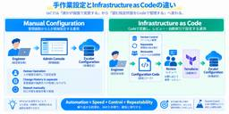
Chapter 8｜第86回 TerraformとInfrastructure as CodeはZscalerとどう関係する？
APC 技術ブログ
こんにちは、エーピーコミュニケーションズ 0-WANの山根です。 第85回では、APIを使うと人の操作をシステムから実行できるようになる、という話をしました。 では、さらに一歩進んで、 「現在の設定状態そのものをコードとして管理できないか？」 と考えると、Infrastructure as Code（IaC）の考え方につながります。 ネットワークやクラウド基盤では、サーバーやネットワークリソースをコードで定義し、レビューしてから反映する運用が広く使われています。 Zscalerでも、ポリシーやApplication Segmentなど一部の設定をTerraformから管理できます。 今回はTe…
7日前
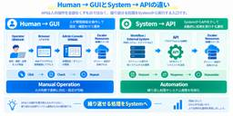
Chapter 8｜第85回 APIを使うとZscaler運用はどう変わる？
APC 技術ブログ
こんにちは、エーピーコミュニケーションズ 0-WANの山根です。 Zscalerの運用では、管理画面を使って確認・変更する場面が多くあります。 ユーザーやアプリケーションの情報を確認する。 設定内容を一覧化する。 同じようなリソースを複数作る。 別システムの情報と突き合わせる。 件数が少なければ、人が画面を見ながら作業する方法でも十分です。 しかし対象が増え、同じ処理を繰り返し、他システムとの連携が必要になると、「人が毎回同じ操作をする」こと自体が運用負荷になります。 そこで使われるのがAPIです。 まず結論。APIは「管理画面の代わり」ではなくシステム同士をつなぐ入口 一言でいうと、 API…
7日前
Chapter 8｜第84回 Private Service Edgeはどんなときに考える？
APC 技術ブログ
こんにちは、エーピーコミュニケーションズ 0-WANの山根です。 Zscalerというと、「世界中に分散したZscaler Cloudへ通信を送る」イメージを持つ方が多いと思います。 実際、Public Service EdgeはZscalerの主要な提供形態です。 では、なぜPrivate Service Edgeという選択肢があるのでしょうか。 「プライベート」という名前から、Zscaler Cloudとは切り離された独立装置を想像するかもしれません。 しかし、そうではありません。 Private Service Edgeは、特定組織向けのService Edgeを自社サイトやクラウド環境…
7日前
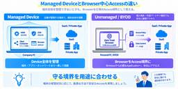
Chapter 8｜第83回 Zero Trust Browserって何？ブラウザーから始めるゼロトラスト
APC 技術ブログ
こんにちは、エーピーコミュニケーションズ 0-WANの山根です。 会社支給PCなら、MDMやEDR、Client Connectorなどで端末全体を管理できます。 では、委託先や外部パートナーのPC、BYODのように、企業側が端末全体を管理できない場合はどうでしょうか。 「業務アプリケーションを使ってほしい。でも個人端末へ会社のエージェントを入れることは難しい」 こうした場面では、端末全体ではなくブラウザーを仕事のセキュリティ境界として使う考え方が有効です。 Zscalerでは、その選択肢をZero Trust Browserとして提供しています。 まず結論。ブラウザーの中で「アクセス」と「デ…
7日前
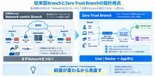
Chapter 8｜第82回 Zero Trust Branchって何？拠点ネットワークはどう変わる？
APC 技術ブログ
こんにちは、エーピーコミュニケーションズ 0-WANの山根です。 本社、支店、店舗、工場などの拠点ネットワークでは、これまで多くの役割を現地のネットワーク機器で担ってきました。 インターネット接続、拠点間通信、ファイアウォール、VPN、ルーティング、セグメント分割。 拠点が増えるほど、「つなぐためのネットワーク」と「守るためのセキュリティ」の両方が複雑になりやすくなります。 ではゼロトラストの考え方を拠点へ広げると、何が変わるのでしょうか。 Zscalerでは、その方向性をZero Trust Branchとして提供しています。 まず結論。Zero Trust Branchは「拠点を大きなネッ…
7日前
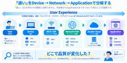
Chapter 8｜第81回 ZDXって何？「遅い」をユーザー体験から見る
APC 技術ブログ
こんにちは、エーピーコミュニケーションズ 0-WANの山根です。 「サーバーは正常です」 「回線にも障害はありません」 「でも、利用者は遅いと言っています」 こんな場面では、どこを見ればよいのでしょうか。 従来の監視では、サーバー、回線、ネットワーク機器などを個別に見て「正常か異常か」を確認することが中心でした。 しかし利用者が感じる「遅い」は、端末、Wi-Fi、ISP、ネットワーク経路、DNS、アプリケーションの応答など複数の要素が重なって起こります。 そこで登場するのが、Zscaler Digital Experience（ZDX）です。 まず結論。ZDXは「ユーザーから見た体験」をエンド…
7日前

GitHub Universe 2026 の Changelog 35件まとめ
APC 技術ブログ
はじめに タグ別の集計 GitHub Copilot Fusion：最適なAIモデルの選定とマルチモデル連携 GitHub intelligence：開発者に合わせた支援と複数リポジトリをまたいだ探索 Copilot Automations：ワークフローによるエージェントタスクの自動化 GitHub Agentic Workflows：自然言語で記述するワークフロー コードレビュー & Issue / PR GitHub Actions・CI/CD アプリケーションセキュリティ・サプライチェーンセキュリティ クライアント & クロスプラットフォーム GitHub Copilotの管理 & ライ…
8日前
サーバーの限界を突破する拡張術：PCIe BoxがAIとデータ分析に必要な理由
APC 技術ブログ
はじめに：ソフトウェアの裏側にある「物理」の壁 Databricksのようなデータプラットフォームを活用して分析環境を整えていくと、いずれ直面するのが「計算リソース」の問題です。「もっと大規模なモデルを学習させたい」「処理時間を半分にしたい」と思ったとき、最終的にその処理を担うのは物理的なハードウェアです。 しかし、一般的なサーバー筐体には物理的な限界があります。「GPUをもっと挿したいのにスロットが足りない」「電源容量や排熱が限界」といった理由で、サーバーそのものを買い替えざるを得ない……そんな経験はないでしょうか？ 今回は、そんなハードウェアの制約を打ち破る技術、「PCIe Box（拡張シ…
8日前
Lakehouseで完結！ DatabricksがRAGの「信頼性」と「最新性」を保証する仕組み
APC 技術ブログ
1. RAGとは何か？ — 企業AIの信頼性を高める仕組み 大規模言語モデル（LLM）は高い汎用性を持つ一方、企業での利用には次の2点が大きな課題となります。 知識の断絶（Knowledge Cutoff）： LLMは学習した時点の知識しか持たず、企業内の最新情報や頻繁に更新される文書には追従できません。 ハルシネーション（Hallucination）： モデルが自信を持って誤った情報を生成してしまうリスクがあり、ビジネス判断に影響を与える可能性があります。 RAG（Retrieval-Augmented Generation / 検索拡張生成）は、これらの問題を根本的に緩和するために生まれた…
8日前
インフラエンジニアのDP-600挑戦記：不合格から学んだこと
APC 技術ブログ
はじめに Microsoft Fabricの資格試験であるDP-600に挑戦しましたが、結果は不合格でした。合格体験記はたくさんありますが、落ちた話はあまり見かけません。再挑戦の準備も兼ねて、何が足りなかったのかを整理してみます。 普段はKubernetesやRedfishなど、インフラやハードウェア管理の仕事をしているエンジニアです。データ分析とは縁遠い立場から、なぜこの試験を受けたのか、どこでつまずいたのかを正直に書いていきます。 受験のきっかけは個人的な興味です。業務で必要に迫られたわけではありません。 DP-600とはどんな試験か DP-600（Implementing Analyti…
8日前
インフラエンジニアのためのMicrosoft Fabric入門
APC 技術ブログ
はじめに Microsoft Fabricの基本概念を、インフラエンジニアの目線で整理した記事です。 Fabricはデータ分析の基盤なので、普段サーバーやKubernetesを触っている人には用語がなじみにくいところがあります。そこで、インフラの概念に置き換えられる部分は置き換えながら説明していきます。 Fabricとは：キャパシティ・ワークスペース・アイテム Microsoft Fabricは、データの取り込みから加工、分析、レポートまでを1つにまとめたSaaSの分析基盤です。サーバーを立てる必要はなく、まず押さえるべきなのは「キャパシティ」「ワークスペース」「アイテム」の3層構造です。 層…
8日前
【OCI】Oracle AI World 2026現地レポート #3 ~番外編~
APC 技術ブログ
目次 目次 はじめに まさかの通信不能？現地での「eSIMトラブル」と教訓 実際に起きたこと このトラブルから得た教訓 持ってきて本当に助かったものベスト3 No.1：インスタント味噌汁 ＆ トラベル用携帯湯沸かしポット No.2：ランニングセット（ウェア＆シューズ） No.3：各種サプリメント（ビタミン・食物繊維） 現地のおすすめレストラン1：Tacos El Gordo 現地のおすすめレストラン2：Noodle Asia まとめ 関連記事 おわりに はじめに こんにちは、株式会社エーピーコミュニケーションズの松尾です。 本記事では、ラスベガスで開催されたOracle AI World 20…
9日前
【OCI】Oracle AI World 2026現地レポート #2
APC 技術ブログ
目次 目次 はじめに AI × マルチクラウドから読み解くOracleとハイパースケーラーの協業 AI Innovation: OCI is Building Secure Multicloud Enterprises [SPO2478] クラウド移行の先にあるのは、企業データの活用 Google CloudとOracleが協業する意味 マルチクラウド≠「複数のクラウドを使うこと」 What's next with Oracle AI Database@AWS [SPO2620] Oracleの業務データをAWSのAIサービスへつなぐ 移行の実績と、その先のAI活用 Build an AI A…
9日前
【OCI】Oracle AI World 2026現地レポート #1
APC 技術ブログ
目次 目次 はじめに イベント概要 主なセッション速報 Day1 Partner Success Summit Day2 基調講演 Day3 基調講演 Day3 スポットライト 主要アップデートまとめ 自律型エージェント実行基盤「Fusion Claw」と自然言語インターフェース「Fusion Companion」の発表 導入・構成の機械可読化「Fusion Setup and Configuration Registry」をGitHub上でOSS公開 OpenAI共同開発「Oracle AI Workspace」と現場主導アプリの安全運用基盤「Oracle App Composer」の発表 …
9日前
GitHub ActionsからSSM経由でプライベートEC2上のコマンドを実行する
APC 技術ブログ
はじめに こんにちは、クラウド事業部の松岡です。 GitHub ActionsからAWS上のEC2に処理を実行させたい場合、EC2にSSH接続する方法がよく使われます。一方で、インターネットから接続できるようにEC2を公開したり、SSH鍵を管理したりするのは避けたいところです。 この記事では、EC2をプライベートサブネットに配置し、AWS Systems Manager（SSM）のRun Commandを使ってGitHub Actionsからコマンドを実行します。EC2へのインバウンド通信やSSHポートの開放は行いません。EC2からインターネットへ出る通信にはNAT Gatewayを利用します…
11日前
【Wiz】PHP脆弱性「PHP2Shell」にWizはどう対応するのか
APC 技術ブログ
はじめに 対象読者 この記事で説明すること／しないこと 説明すること 説明しないこと 脆弱性の概要と影響 Wiz Researchの先行発見 AIの活用で、PHPの重大な脆弱性を発見 Wizによる対応 Threat Intel Center トリアージ AI活用による対処の迅速化 自動化ルールによる初動対応の迅速化 まとめ お問い合わせ はじめに こんにちは、iTOC事業部Global Data+AI部の森です。 先日から話題となっているPHPの脆弱性「PHP2Shell」について、多くの皆様が関心を寄せていることと思います。 この脆弱性に対するWizの対応について、今回はご紹介したいと思いま…
12日前